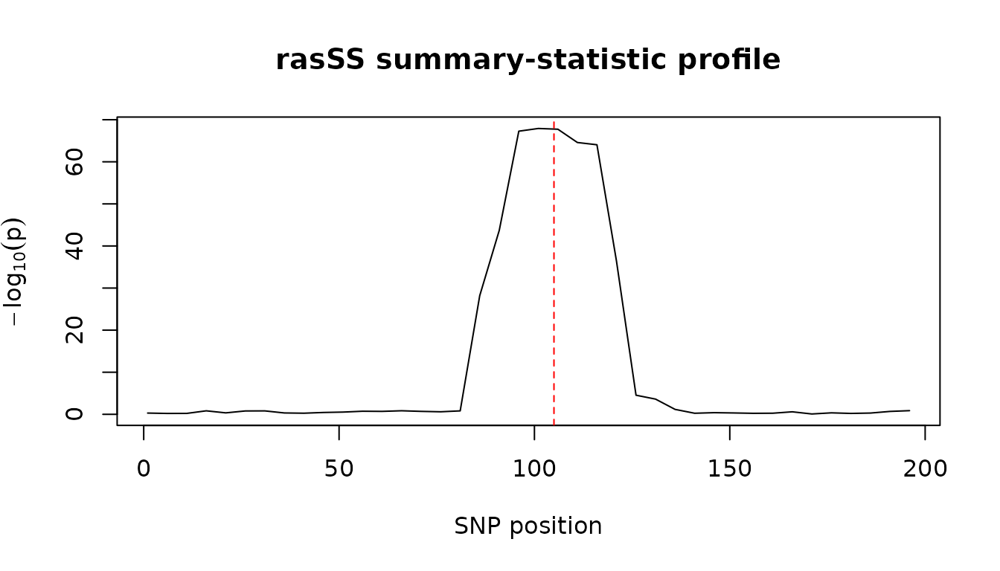

Getting started with Summary-statistic regional association scanning
Source:vignettes/get-started.Rmd
get-started.RmdrasSS extends the RAS method to accept GWAS summary statistics. It
replaces the per-window regressions that required individual-level data
with 1-df weighted burden statistics, calculated by
t_burden = w'Z / sqrt(w'Rw), using the marginal Z-scores,
weights derived from a discovery set (marginal effect sizes), and an
external LD reference. The resulting profile is then inputted into the
original, unmodified RAS change-point detection. This vignette
demonstrates a full example workflow on a small simulated
chromosome.
Discovery and target summary statistics
beta <- rep(0, n_snps)
beta[101:110] <- 0.5 # one sparse causal cluster
X_d <- sim_genotypes(1000, R_true)
X_t <- sim_genotypes(1000, R_true)
y_d <- make_pheno(X_d, beta, "continuous", seed = 2)
y_t <- make_pheno(X_t, beta, "continuous", seed = 3)
disc <- get_marginal_stats(X_d, y_d) # discovery weights w
targ <- get_marginal_stats(X_t, y_t) # target Z-scores ZScan with explicit window parameters
scan <- scan_ss(disc$beta, targ$z, R_emp, mask,
skip1 = 5, skip2 = 5,
min_window_size = 5, max_window_size = 15)
plot(scan$x, scan$y, type = "l",
xlab = "SNP position", ylab = expression(-log[10](p)),
main = "rasSS summary-statistic profile")
abline(v = 105, lty = 2, col = "red") # true causal cluster
The burden statistic for a single window
win <- 96:115
t_burden(w = disc$beta[win], Z = targ$z[win], R = R_emp[win, win])
#> [1] 17.61409Peak detection with the original RAS CPD
rasSS does not modify the original detection algorithm; the profile
generated above is inputted into RAS’s own ras_detect() /
ras_validate(), specifying all detection parameters.
cp <- quiet(RAS::ras_detect(x = seq_along(scan$x), y = scan$y,
window_size = 12, slope_check_window_size = 8,
slope.p.values.threshold.left = 1e-4,
slope.p.values.threshold.right = 1e-4))
val <- quiet(RAS::ras_validate(this.result = cp, x = seq_along(scan$x), y = scan$y,
this.start = 1, this.skip = 5,
second_window_size = 20, min_signal = 2.5,
p.value.threshold = 1e-3))
scan$x[val$tau_hats] # detected peak positions (SNP coordinates)
#> [1] NABinary traits
For case-control data, replace the marginal statistics with the Rao score version; everything else is identical as follows.
y_b <- make_pheno(X_t, beta, "binary", seed = 4)
stat_b <- get_marginal_stats_bin(X_t, y_b)
head(stat_b$z, 3)
#> [1] -0.003737223 -0.935993213 -0.851067166The simulation studies (small toy chromosome pilot study, paired comparison with individual-level data method, and paper-replication study) can be found on the pkgdown website under Simulations.